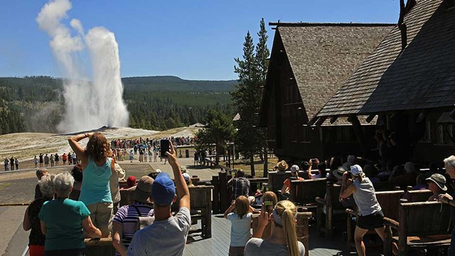
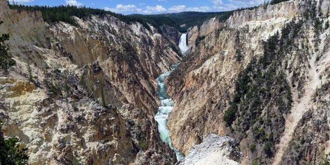
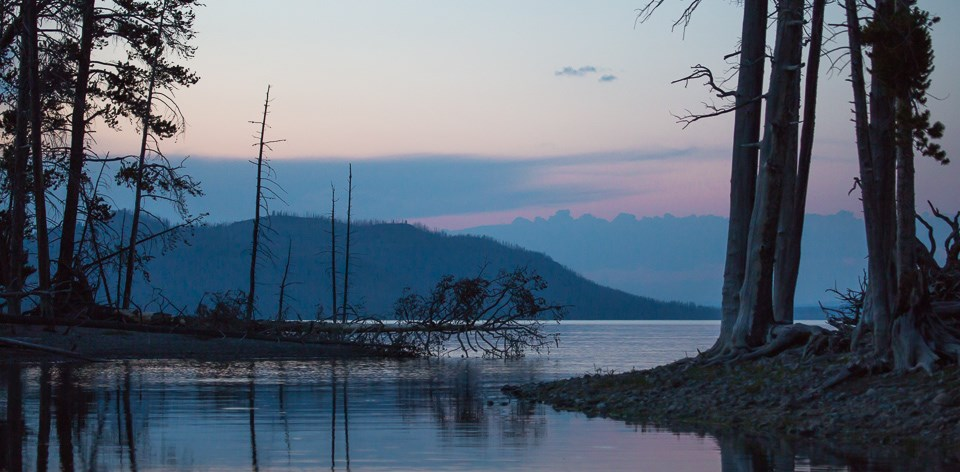

Old failthful
 "Watching Old Faithful Geyser erupt is a Yellowstone National Park tradition. People from all over the world have journeyed here to watch this famous geyser. The park’s wildlife and scenery might be as well-known today, but it was the unique thermal features like Old Faithful Geyser that inspired the establishment of Yellowstone as the world’s first national park in 1872. Old Faithful is one of nearly 500 geysers in Yellowstone and one of six that park rangers currently predict. It is uncommon to be able to predict geyser eruptions with regularity and Old Faithful has lived up to its name, only lengthening the time between eruptions by about 30 minutes in the last 30 years. Thermal features change constantly and it is possible Old Faithful may stop erupting someday. Geysers and other thermal features are evidence of ongoing volcanic activity beneath the surface and change is part of this natural system. Yellowstone preserves the natural geologic processes so that visitors may continue to enjoy this natural system. Watch eruptions from the Old Faithful viewing area or along the boardwalks that weave around the geyser and through the Upper Geyser Basin." - "https://www.nps.gov/yell/planyourvisit/exploreoldfaithful.htm"
Canyon Area
 "The Grand Canyon of the Yellowstone is roughly 20 miles long, measured from the Upper Falls to the Tower Fall area. The canyon was formed by erosion as Yellowstone River flowed over progressively softer, less resistant rock.The 109-foot (33.2-m) Upper Falls is upstream of the Lower Falls and can be seen from the Brink of the Upper Falls Trail and from Uncle Tom's Trail. The 308-foot (93.9-m) Lower Falls can be seen from Lookout Point, Red Rock Point, Artist Point, Brink of the Lower Falls Trail, and from various points on the South Rim Trail. The volume of water flowing over the falls can vary from 63,500 gallons (240,374 l)/second at peak runoff in the spring to 5,000 gallons (18,927 l)/second in the autumn. A third falls is located in the canyon between the Upper and Lower falls. Cascade Creek cascades into the canyon as Crystal Falls. It can be seen from the South Rim Trail just east of the Uncle Tom's area." - "https://www.nps.gov/yell/planyourvisit/canyonplan.htm"
Lake Area
 "Situated at 7,733 feet (2,357 m) above sea level, Yellowstone Lake is the largest high elevation lake (above 7,000 feet / 2,134 m) in North America. It is roughly 20 miles (32.2 km) long and 14 miles (22.5 km) wide, with 141 miles (227 km) of shoreline and a surface area of 132 square miles (342 km2). Yellowstone Lake freezes over completely every winter in late December or early January, with ice thicknesses varying from a few inches to more than two feet. The lake usually thaws in late May or early June. Yellowstone Lake remains cold year-round, with an average water temperature of 41°F (5°C). Because of the extremely cold water, swimming is not recommended. Survival time is estimated to be only 20 to 30 minutes in water at this temperature. Yellowstone Lake has the largest population of wild cutthroat trout in North America. How a Pacific Ocean fish was trapped in a lake that drains to the Atlantic puzzled experts for years. Scientists now believe that Yellowstone Lake once drained to the Pacific Ocean via Outlet Canyon and the Snake River, and that fish swam across the Continental Divide at Two Ocean Pass. Lake trout, an illegally introduced, exotic species, is now found in Yellowstone Lake and threatens the existence of the native cutthroat trout. The lake currently drains north from its only outlet, the Yellowstone River, at Fishing Bridge. The elevation of the lake's north end does not drop substantially until LeHardy Rapids, so many consider those rapids to be the actual northern boundary of the lake." - https://www.nps.gov/yell/learn/nature/yellowstone-lake.htm